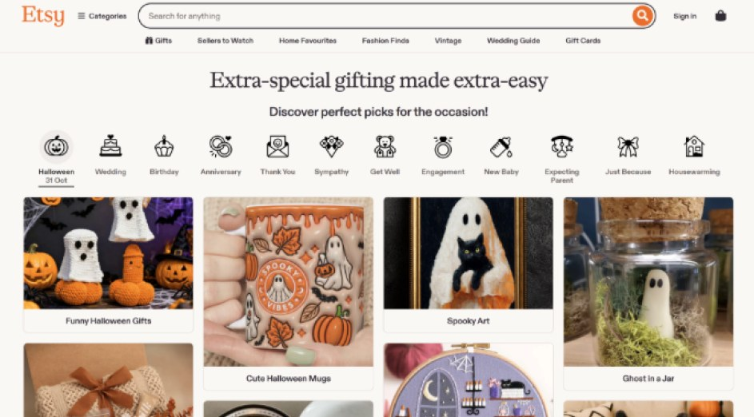
01 Etsy Gift Mode
Occasion quizEtsy products only
Feels like shopping, not a suggestion.
Mobile app
A group gifting app where friends pool money, vote on the gift and add a memory, so no one person has to chase everyone.
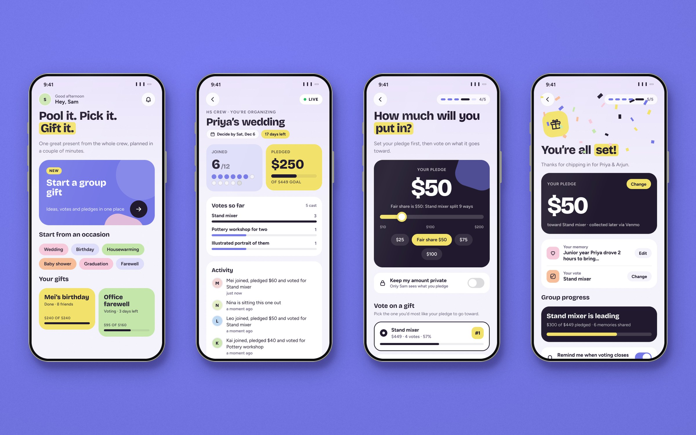
A group gift usually falls on one person. They collect the money, chase whoever hasn't paid, guess what the person would like and pass a card around. Everyone else sends money and signs their name.
Gifter does the organizing instead. One link goes into the group chat, and each friend pledges, votes on the gift and adds a memory that travels with it.
Domain
Gifting for people you don't know that well.
I compared three kinds of gift tools: quizzes that suggest gifts, finders that filter a catalogue, and wishlists like GoWish, where the person receiving says exactly what they want.
Each one leaves the giver doing something on their own. None of them helps a group give together.

01 Etsy Gift Mode
Occasion quizEtsy products only
Feels like shopping, not a suggestion.
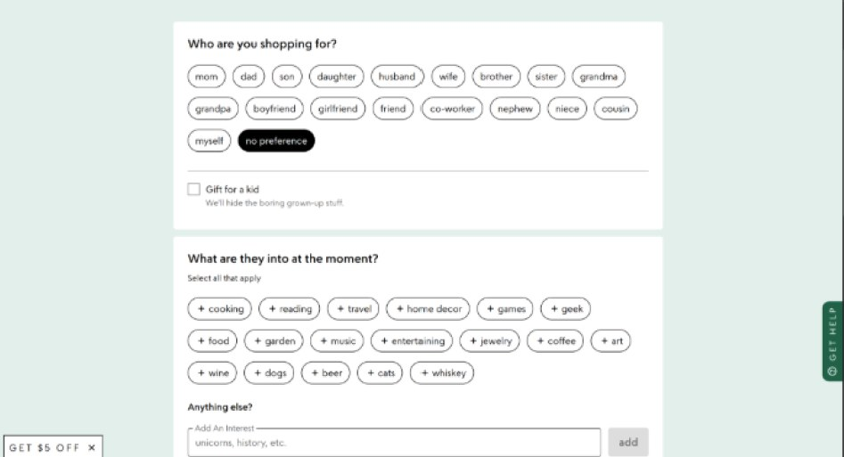
02 Uncommon Goods Gift Finder
Interest chipsFixed options
Personal, but only if you know them well.
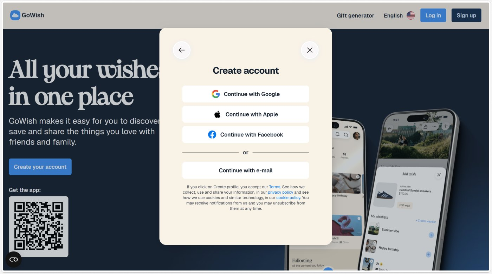
03 GoWish, Giftster, Giftful
WishlistsRecipient decides
Great for a known wish, useless without a list.
User personas
Three people in every group gift.
Whoever organizes, whoever chips in, and whoever has to sit it out. The early journey maps, made for the wishlist idea, are below.
The organizer
"I always end up starting the group gift, then spend two weeks chasing Venmo requests."
The contributor
"Happy to chip in. I just want it to take a minute and still feel like it's from me."
Sitting it out
"It's a tight month. I can't put in this time, and I don't want the whole group to know."
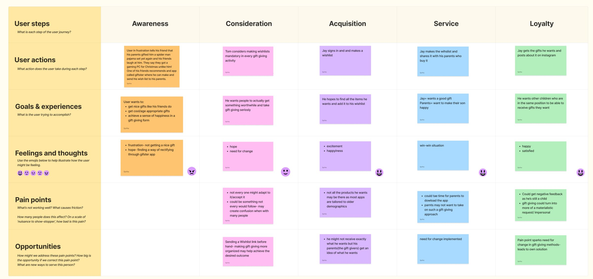
How it changed
Four rounds, from a wishlist to a group gift.
Each round went to critique with professors and outside designers, and each answer changed what the app was for.
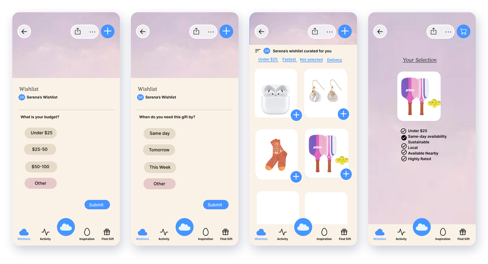
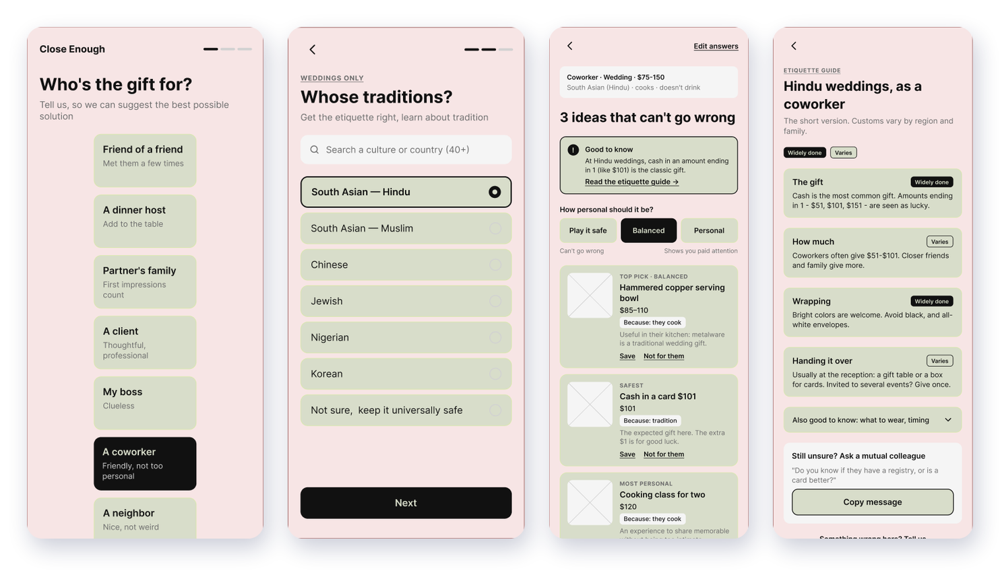
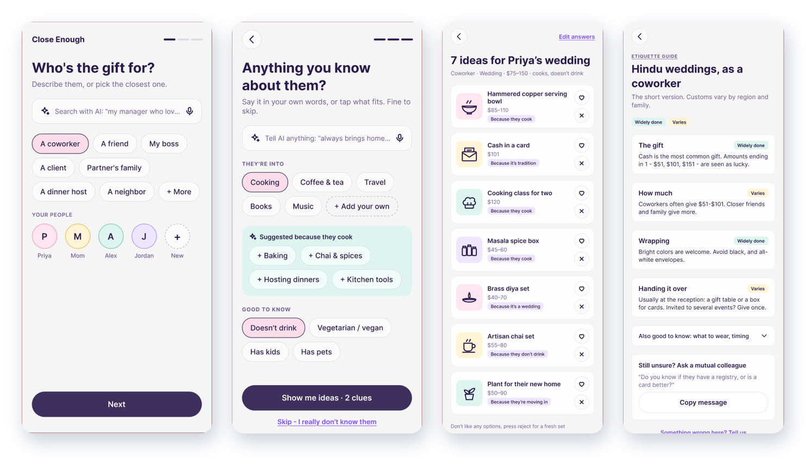
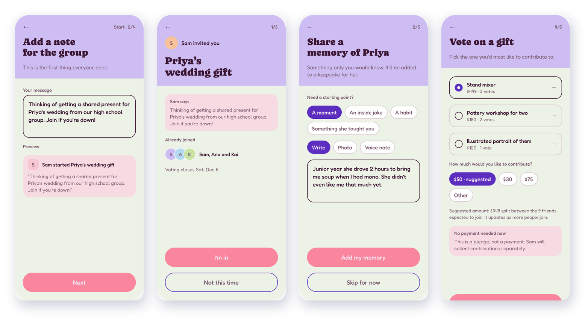
Diwali alone is celebrated differently by region and by faith. A dropdown of cultures was always going to stereotype someone.
A Dutch reviewer put it simply: you wouldn't give a Dutch person beans just because they're Dutch.
If the app is "describe them, get ideas", a chat already does that. It had to do something a chat can't.
So it became a group gift. A chat can't coordinate ten people. Pooling money means bigger budgets and better gifts, every gift invites a group of new people, and office teams buy group gifts all the time.
Compared to GoWish
Less like a store, more like a group card that also buys the present.
GoWish a wishlist
Gifter a pot
Final flow
Two flows, one link between them.
The organizer sets it up in four steps and watches it fill. Everyone else joins from the group chat in about a minute.
Saying "I'm in for $50" is easier than sending money to a stranger's Venmo. The organizer collects once the gift is picked.
The suggested amount is the gift price split by the people who've joined, so it drops as the group grows.
Only the organizer sees who sat it out, and they can still add a memory to the keepsake.
2026
A printed book and companion website that borrow the look of a search engine to bring people who live online back to reading on paper.
The Yellow Pages was once how everyone found things. Now we search. This book uses the most familiar thing online, the search bar, as its way in.
Each section opens with a search, the way you would look something up, but answers it in print with ideas, directions and things to do offline. The pacing follows today's attention span, with a break every few pages, and perforated pages you can tear out and pass on, the way the old directory carried ads.
Try the live siteResearch
What if a book worked like a search engine?
Three findings shaped the book: fewer people read, more people live online, and attention keeps shrinking. Each one became a design decision.
Americans who read for pleasure on a given day: −40%
41% of U.S. adults are online "almost constantly"
Time spent on one screen before switching
The old Yellow Pages was full of tear-out ads and coupons. The book borrows that format: perforated pages you can tear out, keep or pass on, so the advert is for something to do offline.
Sources: Bone et al., iScience (2025), American Time Use Survey · Pew Research Center (2025) · Gloria Mark, Attention Span (2023)
The website
The printed Yellow Pages, carried onto the web.
Interactive pieces, like small games, turn what could be monotonous reading into something playful. It's split into a homepage, an interactive reading page, and index and about pages so it's easy to find your way around.
Motion graphic
From the page to the screen.
A motion piece links the two: the printed book opens into the website's search bar.
2026
A field guide in sound: an interactive sound and data visualization of 72 Central Park bird species, organized by how their songs sound.
Every bird in the park becomes a speck in a murmuration. Birds that sound alike fly together, and the higher a flock sits in the sky, the higher it sings.
Click a flock to hear its call written out as a score, scrub through a day to see where the park is singing, or regroup all 72 species by family, season, habitat or time of day.
Try the live siteOverview
A flock, a map and a chart, all made of sound.
Four ways into the same 72 birds: the murmuration, the score, the map of the park hour by hour, and a sortable chart. Turn your sound on to enter.
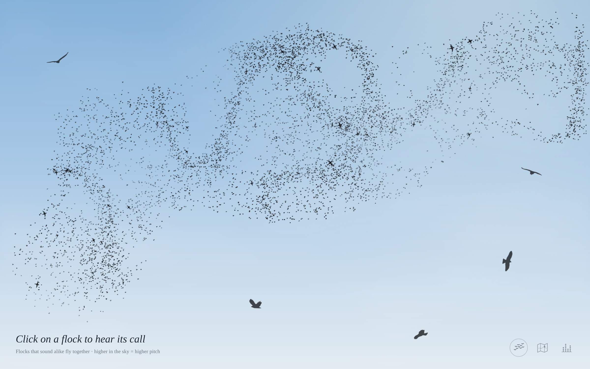
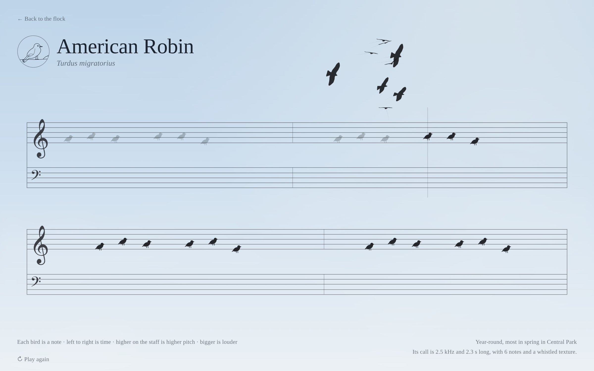
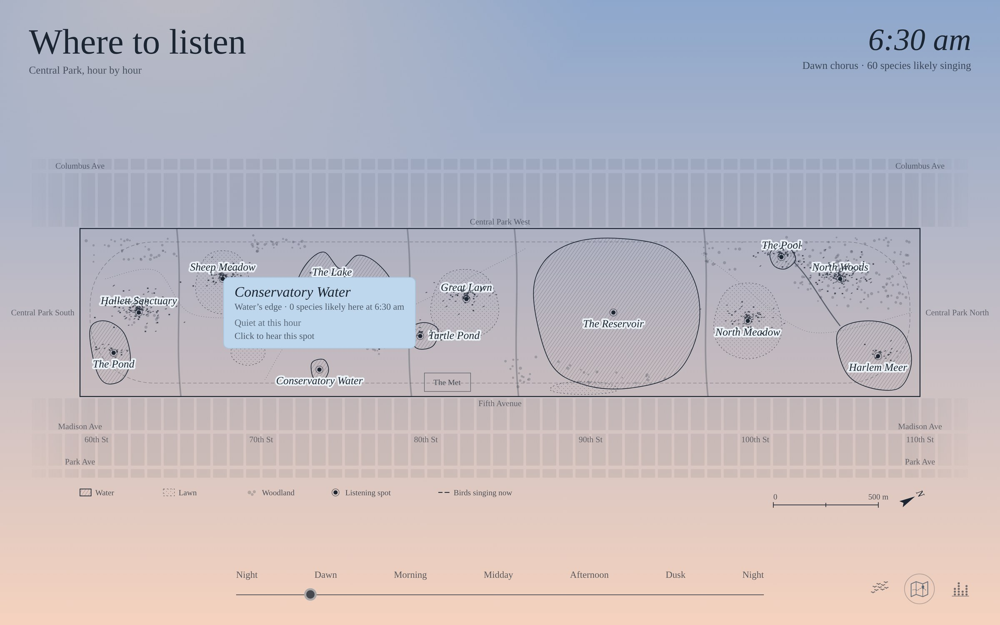
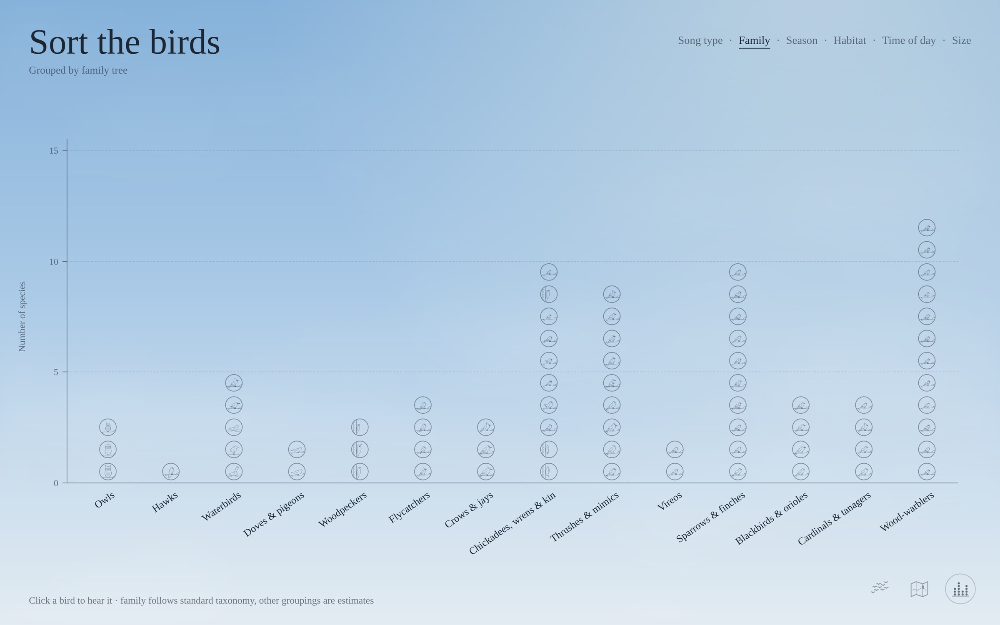
Research
Can a computer hear the difference?
The flock layout depends on six numbers measured from each call. I wanted to test whether those numbers really hold up: given only the six, can a model tell a hoot from a whistle from a trill?
I designed the study: the question, which features to measure, how to group the calls and how to test the model. I then used Claude (Anthropic's AI) to write and run the Python for it, and checked and interpreted the results myself.
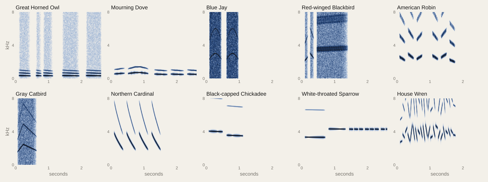
| Feature | What it measures |
|---|---|
| Pitch | Where the song's energy sits (average spectral centroid) |
| Pitch spread | How much the pitch slides and jumps |
| Noisiness | Pure tone vs. rough, breathy noise (spectral flatness) |
| Notes per second | Tempo: how often a new note starts |
| Note length | How long each note lasts |
| Time singing | Share of the clip with sound vs. silence |
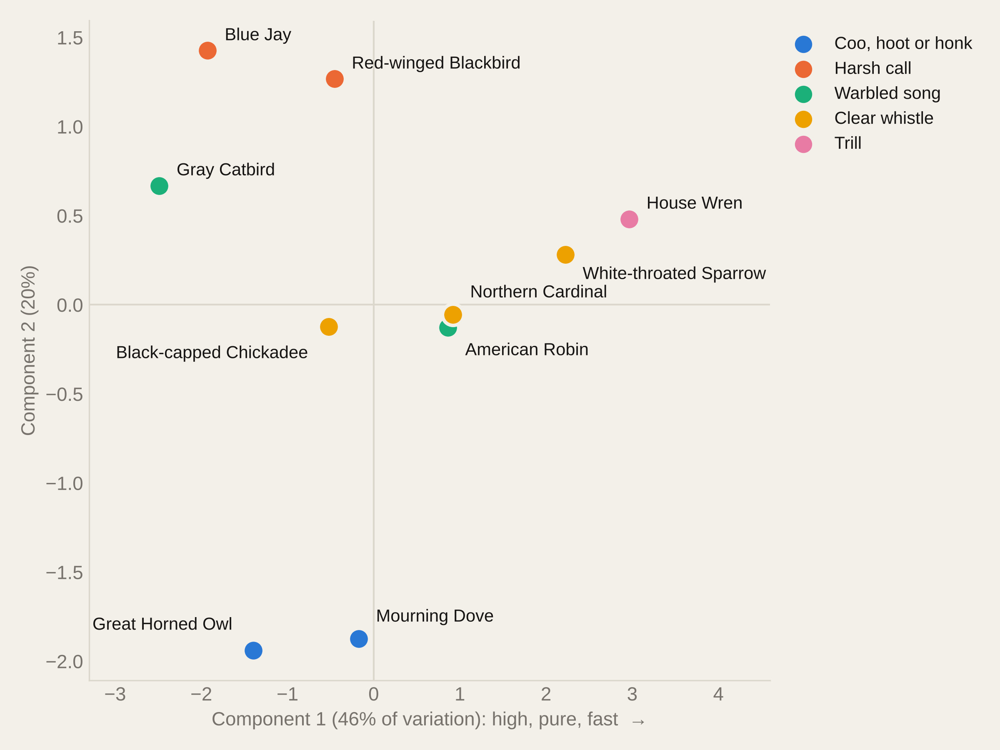
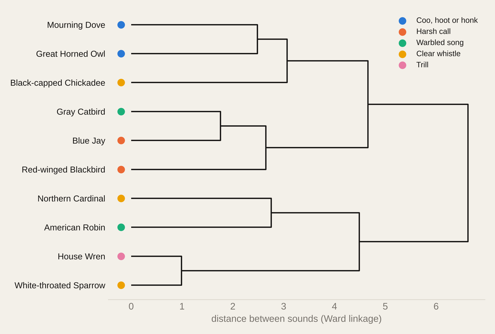
| Held-out bird | Actually | Model said | |
|---|---|---|---|
| Great Horned Owl | Hoot | Hoot | ✓ right |
| Mourning Dove | Hoot | Hoot | ✓ right |
| Blue Jay | Harsh call | Warble | ✗ wrong |
| Red-winged Blackbird | Harsh call | Trill | ✗ wrong |
| American Robin | Warble | Whistle | ✗ wrong |
| Gray Catbird | Warble | Harsh call | ✗ wrong |
| Northern Cardinal | Whistle | Warble | ✗ wrong |
| Black-capped Chickadee | Whistle | Harsh call | ✗ wrong |
| White-throated Sparrow | Whistle | Trill | ✗ wrong |
| House Wren | Trill | Whistle | ✗ wrong |
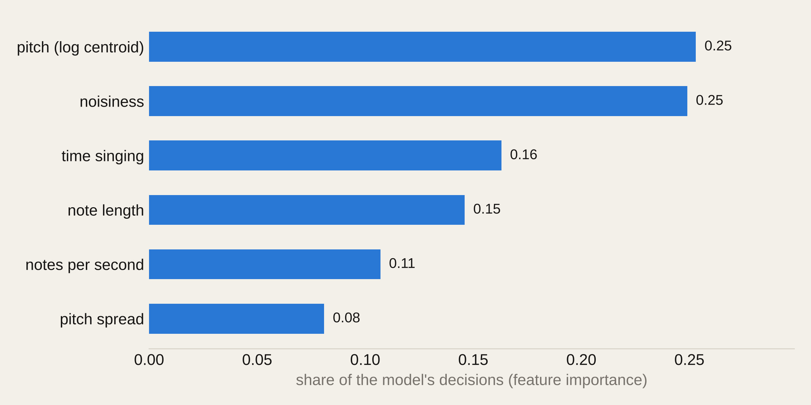
Reflection
Good at recognising a call it has heard, not yet at generalising.
The features are good at recognising a call they've heard, but with one or two birds per song type the model memorises individuals rather than learning what a whistle is. Only the low hoots generalised. Pitch alone gets you surprisingly far: across all 72 species the song types stack up from low hoots to high buzzy warblers.
Next step: swap the stand-ins for real recordings (Xeno-canto, the Macaulay Library) with many individuals per species, and add richer features like MFCCs.
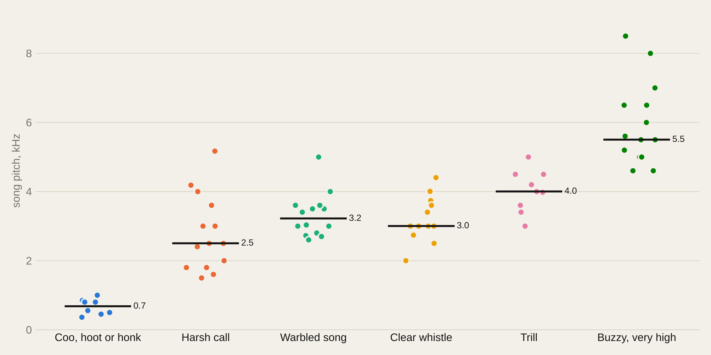
Code
The full study, in one script.
Load, measure, group, train and test. I set out each step and what it needed to do; Claude, an AI assistant, wrote the Python to my plan. The same pipeline runs unchanged on real recordings.
"""
The Birds of Central Park - classification study
--------------------------------------------
Question: can the six sound features behind the website's flock layout tell
song types apart (hoot, harsh call, warble, whistle, trill)?
1. Load the ten analysed calls (WAV, 22,050 Hz).
2. Measure the same six features the website uses.
3. Look at how the calls group (PCA + hierarchical clustering).
4. Train a classifier on varied copies of each call and test it on copies
it has never seen.
Note: the ten calls are synthesized stand-ins modelled on field-guide
descriptions. The same pipeline runs unchanged on real recordings.
"""
import json
from pathlib import Path
import numpy as np
from scipy.io import wavfile
from scipy.signal import resample
from scipy.cluster.hierarchy import linkage, dendrogram
from sklearn.decomposition import PCA
from sklearn.ensemble import RandomForestClassifier
from sklearn.metrics import accuracy_score, confusion_matrix
from sklearn.model_selection import train_test_split
from sklearn.preprocessing import StandardScaler
SR = 22050
CALLS = Path("calls")
SONG_TYPE = { # from the site's species list
"owl": "hoot", "dove": "hoot",
"jay": "harsh", "blackbird": "harsh",
"robin": "warble", "catbird": "warble",
"cardinal": "whistle", "chickadee": "whistle", "sparrow": "whistle",
"wren": "trill",
}
FEATURES = ["pitch (log centroid)", "pitch spread", "noisiness",
"notes per second", "note length", "time singing"]
def load(name):
sr, x = wavfile.read(CALLS / f"{name}.wav")
return x.astype(np.float32) / 32768
def spectrogram(x, n=512, hop=256):
"""Short-time Fourier transform: one row of power per 11.6 ms frame."""
win = np.hanning(n)
frames = [x[s:s + n] * win for s in range(0, len(x) - n, hop)]
return np.abs(np.fft.rfft(frames, axis=1)) ** 2
def features(x):
"""The same six numbers the website computes in JavaScript."""
S = spectrogram(x)[:, 4:] # drop the lowest bins (DC rumble)
freqs = np.fft.rfftfreq(512, 1 / SR)[4:]
rms = np.sqrt(np.mean(np.lib.stride_tricks.sliding_window_view(x, 512)[::256] ** 2, axis=1))[:len(S)]
active = rms > 0.12 * rms.max() # frames where the bird is singing
centroid = (S * freqs).sum(1) / (S.sum(1) + 1e-12)
flatness = np.exp(np.log(S + 1e-12).mean(1)) / (S.mean(1) + 1e-12)
onsets = np.sum(active[1:] & ~active[:-1]) + int(active[0])
dur = len(x) / SR
sung = active.sum() * 256 / SR
logc = np.log(centroid[active])
return np.array([
logc.mean(), # how high the song sits
logc.std(), # how much the pitch moves
np.log(flatness[active].mean() + 1e-4), # tone (low) vs noise (high)
np.log(onsets / dur), # tempo
np.log(sung / onsets), # length of each note
sung / dur, # share of the clip spent singing
])
def vary(x, rng):
"""A new 'individual': shift pitch/tempo a little, change loudness, add park noise."""
stretch = rng.uniform(0.9, 1.1)
y = resample(x, int(len(x) * stretch))
y = y * rng.uniform(0.6, 1.0) + rng.normal(0, rng.uniform(0.002, 0.02), len(y))
return y.astype(np.float32)
if __name__ == "__main__":
names = list(SONG_TYPE)
audio = {n: load(n) for n in names}
# 2-3. features for the ten calls, then how they group
X = np.array([features(audio[n]) for n in names])
Z = StandardScaler().fit_transform(X)
pca = PCA(n_components=2).fit(Z)
xy = pca.transform(Z)
tree = linkage(Z, method="ward")
# 4. 40 varied copies per call -> 400 clips, split 70 / 30
rng = np.random.default_rng(7)
rows, labels, groups = [], [], []
for n in names:
for _ in range(40):
rows.append(features(vary(audio[n], rng)))
labels.append(SONG_TYPE[n]); groups.append(n)
rows, labels = np.array(rows), np.array(labels)
Xtr, Xte, ytr, yte = train_test_split(rows, labels, test_size=0.3, stratify=labels, random_state=7)
model = RandomForestClassifier(n_estimators=300, random_state=7).fit(Xtr, ytr)
pred = model.predict(Xte)
# 5. the harder test: hold out one whole species, train on the other nine,
# and ask the model to name the song type of a bird it has never heard
groups = np.array(groups)
loso = {}
for n in names:
test = groups == n
m = RandomForestClassifier(n_estimators=300, random_state=7).fit(rows[~test], labels[~test])
guess = m.predict(rows[test])
loso[n] = {"true": SONG_TYPE[n], "guess": max(set(guess), key=list(guess).count),
"share_right": round(float(np.mean(guess == SONG_TYPE[n])), 2)}
order = ["hoot", "harsh", "warble", "whistle", "trill"]
result = {
"features": dict(zip(names, X.round(3).tolist())),
"pca_explained": pca.explained_variance_ratio_.round(3).tolist(),
"pca_xy": dict(zip(names, xy.round(3).tolist())),
"accuracy": round(accuracy_score(yte, pred), 3),
"confusion": confusion_matrix(yte, pred, labels=order).tolist(),
"labels": order,
"importance": dict(zip(FEATURES, model.feature_importances_.round(3).tolist())),
"n_train": len(ytr), "n_test": len(yte),
"new_species": loso,
}
Path("results.json").write_text(json.dumps(result, indent=1))
np.save("linkage.npy", tree)
print(f"accuracy on unseen clips: {result['accuracy']:.0%} ({len(yte)} test clips)")
print("PCA variance explained:", result["pca_explained"])
print("new-species test:")
for n, r in loso.items():
print(f" {n:10s} is a {r['true']:8s} -> model says {r['guess']:8s} ({r['share_right']:.0%} of clips right)")
for f, v in sorted(result["importance"].items(), key=lambda kv: -kv[1]):
print(f" {f:22s} {v:.2f}")
Mobile app
A mobile app that connects older adults who find technology difficult with volunteers who can help.
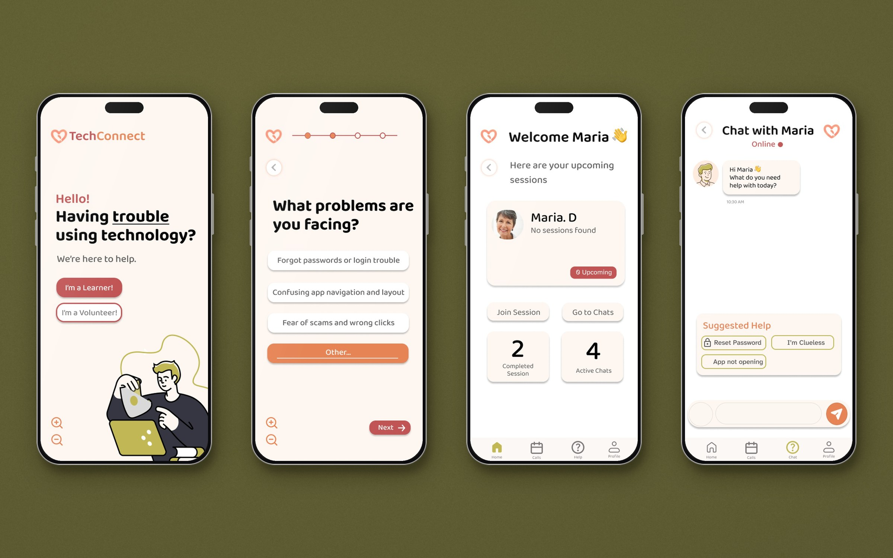
Most apps assume you already know how apps work. For many older adults, a forgotten password or a fear of clicking the wrong thing means asking a grandchild for help, or giving up.
TechConnect makes asking for help the main feature: tell it what's hard once, and it connects you with real people who can walk you through it, through group chats, one-on-one chat and calls.
User personas
Designing for older adults, who most apps quietly leave behind.
Most interfaces assume sharp eyesight, steady hands and years of touchscreen habits. TechConnect starts from the opposite end: larger type, warm high-contrast colour, one decision per screen, and a real person to call when something goes wrong.
Persona
An older adult who is new to smartphones and wants to stay close to family online.
Designing for older eyes
The lens of the eye yellows and clouds with age, so colour and type had to work through it.
As we age the lens thickens, yellows and starts to scatter light, an early form of cataract. Less light reaches the retina, contrast drops and blues and greens become harder to tell apart, while reds, oranges and yellows stay clear.
Drag the slider to see the welcome screen and two colour palettes through an ageing eye.
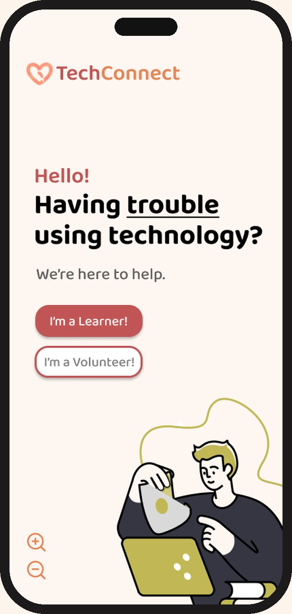
TechConnect palette (warm)
A typical cool app palette
Drag the slider to raise the viewer's age, from 25 to 85, and watch the lens yellow and cloud like an early cataract.
Warm cream, coral and olive instead of cool blues and teals. Warm hues keep their difference through a yellowed lens, and every button is a solid, high-contrast shape rather than a pale tint.
A rounded sans serif, never smaller than body size, in sentence case with no all-caps or underlined body text, with generous line spacing. Zoom in and out buttons sit in the same corner of every screen.
Dark text on a light background throughout, no patterned backgrounds behind text, and large tap targets with space around them.
User flow
About a minute, four taps, to get set up.
Onboarding asks one thing at a time, then home opens three ways to get help.
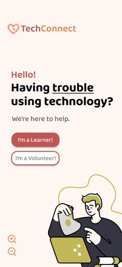
Welcome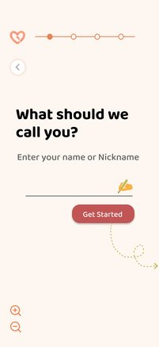
Name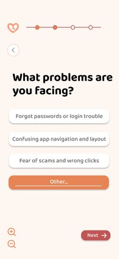
Problems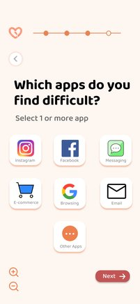
Apps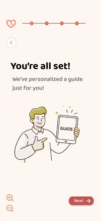
ReadyHappy path
Nine screens, from welcome to call.
Spriha is a dedicated generalist currently studying Communication Design at Parsons School of Design. She's always looking to learn something new, meet more people, and connect.
BFA Communication Design, Parsons — 2028
Target Advancing Design Mentorship
Board Member, AIGA Parsons
Board Member & Treasurer, DDAP
Digital Content & Social Media, Parsons
Adobe Student Ambassador
Brand & Marketing Design Intern, Out of Office — Bangalore
Design Intern, Colliers International — Bangalore
Instagram (Meta) Co-Design Lab
Figma FigBuild 2026